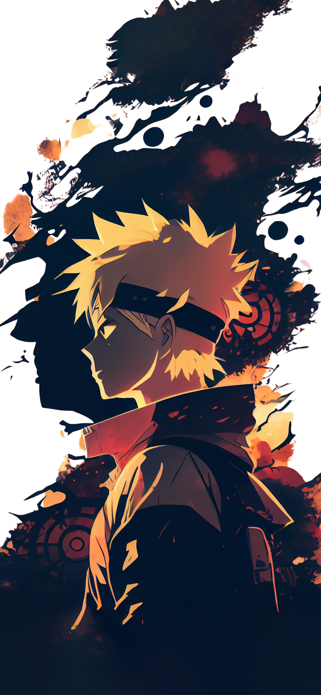

N a r u t o
U z a m a k i
Naruto is a Japanese manga series written and
illustrated by Masashi Kishimoto.
It tells the story of Naruto Uzumaki, a young ninja who
seeks recognition from his peers
and dreams of becoming the Hokage, the leader of his
village. The story is told in two parts
– the first set in Naruto's pre-teen years, and
the second in his teens.
